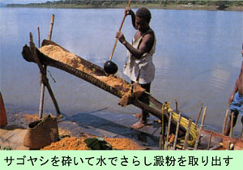
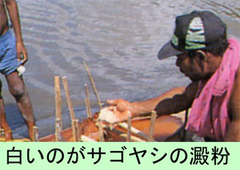

|
第６４ サゴヤシ澱粉と茸とピナタンと
 彼等現地人はサゴ椰子澱粉をどの様にして採取するのか、ある日そばで見ていました。まず、サゴ椰子の木を斧で切り倒 し、その幹を半分に切り裂いた。斧の先に丸い鉄輪のついた木製斧で、半分にしたサゴ椰子の幹の肉を細かく削るようにた たく。細かく打ち砕いたサゴ椰子の木片を水と混ぜて手で絞ると白い液が出てくる。それを溜めておくと澱粉だけが白く固 まる。水を捨ててしまえば、澱粉の出来上がりです。澱粉を搾った残りの滓はその場に捨てていた。捨てられた搾り滓に、何日か経つと、椎茸にそっくりの茸が生えてくる。 椎茸の様ないい匂いはしないが、形が椎茸によく似ていて、郷愁を感じました。味がよく、とても、美味しいと思った。 日が暮れて、夜になると、野豚が何処からともなく現れ、搾り滓を食べにくる。豚は搾り滓が発酵してから食べにくるのか、 その前に来るのか詳しいことは分からない。また、切り倒されたサゴ椰子の樹幹に、何日かたつと、ピナタンが沢山いるよ うになる。何の幼虫か分からないが、小指位の大きさで、ブヨブヨしていて、唇の所だけが茶褐色で少し固い。胴体は蛇腹 状になっていて、色は乳白色で柔らかい。この幼虫のピナタンを煮て食べると、まるでバターの様に美味しい。 サゴ椰子の茂っているところは独特の湿地帯であった。サゴ椰子の葉の棘に触れると、ひどく痛い。サゴ椰子の搾り滓の所 に、辛抱強く待っていれば、野豚を仕留められるかも知れないが、今の我々にはそれだけの気力も体力もない。サゴ椰子は澱 粉、茸、ピナタン、と無限の食料を我々に補給してくれました。 現地人たちは、決まった仕事はなく、山に行ったり、川に行ったりして、毎日を遊んで暮らしていました。運よく野豚が取 れた時などは、一晩ぢゅう、シンシンを歌って、踊って、夜を明かしていました。朝になったらミイブラ バガラップと言っ てました。オールナイトだから疲れるのは、当たり前でしよう。彼等現地人には、『ニユーギニアはこの世の天国』でした。 現在の我々にとっては『この世の地獄』でした。 閑話休題 ハンサからウエワクに退却途中、どこかの兵隊（歩兵）さんが、道路脇に生えていたサゴ椰子の幹を銃剣でえぐり取り、サ ゴヤシの木片を、そのまま生でかじりながら転進して行く姿を見ました。サゴ椰子の木片を焼いて食べるなど、そんな余裕はな く、サゴ椰子の木片をかじりながら退却していく日本軍の姿が悲しく、絶望を感じとりました。あれで、良く生きていけるもん だ。生きる力のすざましい姿を感じました。 サゴ椰子の繊維には８０パーセント以上の澱粉が含有されているそうです。何と！素晴らしい食料資源だろうと驚嘆しました。 これは人口栽培ではありません。天然に生えています。彼等はサゴ椰子を食べ尽くしたら別のサゴ椰子を探すだけの事であります。 ニユーギニアの大自然はナント素晴らしい大地でしよう。天国とはこんな所を言うのであろうか！ |